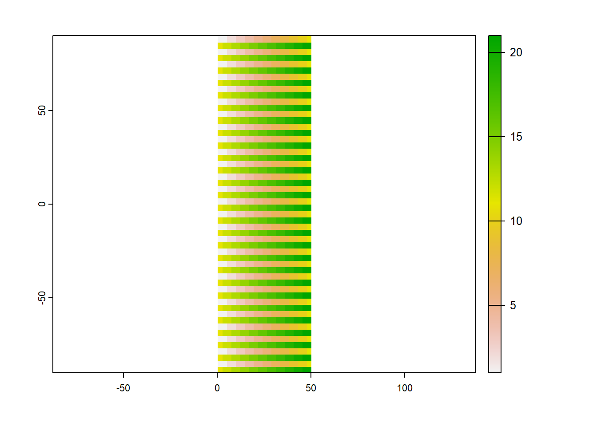

#increase RAM allocation; once increased you cannot decrease it until you restart your session
memory.limit(8000)
memory.limit(5000) #is ignored
###check current RAM allocation
memory.limit()
#if you restart r session it goes back to original RAM allocation
memory.limit()
####
# change RAM allocated to java (heap space)
###
#more niche, but java is needed to run MaxEnt (species distribution modelling)
#settings need to be changed before opening the library
options(java.parameters = c("-XX:+UseConcMarkSweepGC", "-Xmx16000m"))Problem solving session II
Following the success of our last problem solving session, we ran another one in June.

We had interesting and wide-ranging discussions about the issues people are having with geospatial analysis.
Below are some of the key issues / contributions / suggestions that came up.
Six tips for processing big rasters in R - Lorna Hernandez-Santin
Lorna has been processing some massive raster datasets in R, and has been running into persistent RAM issues. The code below contains a few tricks of the trade to try to help get you up and running if you are running into RAM issues.
1. change RAM allocated to R.
This includes a section about changing the RAM allocated to java - which is required for the species distribution modelling package MaxEnt.
2. change RAM allocated to process rasters
You can also increase the RAM available to specific packages - namely the raster and terra packages:
###with raster package
#check allocated fraction (and other raster settings, including temporary directory)
rasterOptions()
#can increase or decrease in same session
rasterOptions(memfrac=0.9)
rasterOptions(memfrac=0.3)
#restarting session goes back to original allocationwith terra package; Mitch showed us: https://geospatial-community.netlify.app/post/2022-02-23-raster-analysis/
library(terra)
terraOptions()
terraOptions(memfrac=0.7)
#and you can also change the temp directory directly for terra... but only terra
terraOptions(memfrac=0.2, tempdir = "R:/big_drive/Trial")3. Move temporary directory to a different folder
As described here, you can change the temp directory so it doesn’t fill up your computer.
Sys.getenv() #to check all setting of the environment
#check the directories now
Sys.getenv("TMPDIR","TMP","TEMP")
#each path needs to be specifically written (otherwise it doesnt work, because of the quotations)
tochange<-c("TMPDIR = 'R:/large_disk/RtempFiles'",
"TMP = 'R:/large_disk/RtempFiles'",
"TEMP = 'R:/large_disk/RtempFiles'")
#"R:/large_disk/Trial"
#write the file as .Renviron in your associated user path (R_USER)
write(tochange, sep="c", file=file.path(Sys.getenv('R_USER'), '.Renviron'))
Sys.getenv('R_USER') #the path where the file was written
#restart session, can be without closing R
Sys.getenv("TMPDIR","TMP","TEMP")4. parallel processing
By default, R uses only one core;but most computers these days have multiple cores
Here is a summary.
Here are 2 ways to do this. ###1.
#specific to an operation, but cannot do many raster operations
clusterR(x, fun, args=NULL, cl=mycluster)###2.
This is the easiest, because you can put anything you need in between
beginCluster()
endCluster()As an example:
#e.g.
ParentDir<-"R:\\FITZBIO-A6478\\4_Analysis\\R\\1_HSModel\\2_RasterTifs\\F3_90m"
Layer1 <-raster(file.path(paste0(ParentDir,"\\Bio1.tif")))
Layer2 <-raster(file.path(paste0(ParentDir,"\\Bio2.tif")))
#plot(Layer1)
#plot(Layer2)
#without using multiple cores
start_time <- Sys.time()
s<-stack(Layer1,Layer2)
Lay1xLay2<-overlay(s, fun=function(x,y) x*y )
end_time <- Sys.time()
NoCore<-end_time - start_time
#using multiple cores, but measuring time only of the process itself
beginCluster()
start_time <- Sys.time()
s<-stack(Layer1,Layer2)
Lay1xLay2<-overlay(s, fun=function(x,y) x*y )
end_time <- Sys.time()
endCluster()
TimeExlcudeCore<-end_time - start_time
#using multiple cores, measuring time of whole process (including parallelizing)
start_time <- Sys.time()
beginCluster()
s<-stack(Layer1,Layer2)
Lay1xLay2<-overlay(s, fun=function(x,y) x*y )
endCluster()
end_time <- Sys.time()
TimeIncludeCore<-end_time - start_time
#check time results
NoCore
TimeExlcudeCore
TimeIncludeCore
#when preparing this, sometimes I got same results sometimes I didn't5. Free up memory
Running gc() gets rid of temp files, so be sure to save results needed and not do it half way through a process that relies on temp files
6. change resolution
If all else fails, you could think about how much resolution you actually need, and whether it could be reduced.
#rescale base layer; basis for the rest
BaseLayerFX<-aggregate(Layer1, fact=factor) #factor defined where paths are loaded
Layer2_coarse<-resample(Layer2,BaseLayerFX) #it will match the extent of the baselayer
#if you aggregate Layer2, there might be slight differences in pixel positions/extents etc-so they may not match
#it is best to resample using the first one as basis
####
# save layers you create in between
###
#so next time you don't have to re-do them...
#it saves times for you and it frees up memory both for new processes -and garbage collection gc()
#e.g.
#writeRaster(Layer2_coarse, filename=file.path(ProcessOut,paste0("uchas.tif")), format="GTiff", overwrite=FALSE)The doParallel package - Tim Devereux
Still on the subject of memory, Tim showed us how to use the doParallel package in R, with a reproducible example.
This is a very basic example of what is called an embarrassingly parallel task, but should be a nice short intro for absolute beginners to parallel programming.
Parallel computing is a complex field of computer science. Performance is dependent on many factors including algorithm complexity, hardware IO performance and input data interdependence. Wikipedia has a nice overview of these topics here: https://en.wikipedia.org/wiki/Parallel_computing#Types_of_parallelism
# First we define our function. For the sake of clear example this function just sleeps for n seconds which is given as input.
do_something <- function(n)
{
Sys.sleep(n)
}### Base R for loop ###
# Define number of iterations
iterations = 6
# Start process timer
start <- proc.time()
# Call our function using a base R for loop, this is executed sequentially using one process.
for (x in 1:iterations){
do_something(1)
}
# Stop process timer
base_loop <- proc.time()-start
# Print duration to console
print(base_loop) user system elapsed
0.00 0.00 6.14 # Import doParallel
library(doParallel)Loading required package: foreachLoading required package: iteratorsLoading required package: parallel# Using doParallel.detectCores(), detect the number of cores on your machine.
detectCores()[1] 8# Using doParallel.registerDoParallel(), allocate a number of cores available for processing in parallel.
registerDoParallel(6)### doParaellel %do% ###
# Start process timer
start <- proc.time()
# Call our function using a doParaellel %do% loop, this is also executed sequentially using one process.
r <- foreach(icount(iterations)) %do% {
do_something(1)
}
# Stop process timer
do_loop <- proc.time()-start
# Print duration to console
print(do_loop) user system elapsed
0.04 0.00 6.15 This takes a similar amount of time to process as base R. Some functions do not gain performance when parallelised or the output of a function may be more reliable when executed as a single process. So in some situations parallelism is not always desired.
### doParaellel %dopar% ###
# Start process timer
start <- proc.time()
# Call our function using a doParaellel %dopar% loop, this is executed in parallel.
r <- foreach(icount(6)) %dopar% {
do_something(1)
}
# Stop process timer
dopar_loop <- proc.time()-start
# Print duration to console
print(dopar_loop) user system elapsed
0.02 0.00 1.08 It takes ~1 seconds to run the our function on 6 cores. How long would it take on 3 cores, or 12 cores? What happens if we change the number of iterations?
# Print concatenated results to console.
print(rbind(base_loop,do_loop,dopar_loop)[,1:3]) user.self sys.self elapsed
base_loop 0.00 0 6.14
do_loop 0.04 0 6.15
dopar_loop 0.02 0 1.08Annoying Terra warning - Richard Cottrell
Richard is running some geospatial analysis using the terra package.He ultimately wants this code to be free of warnings etc, so he can turn it into a shiny app.
But is constantly getting this warning: Error in (function (x) : attempt to apply non-function
This is discussed here.
Where Robert Hijmans (the main terra developer), seems to say that it is an annoying problem with no solution.
April 2022, from Robert Hijmans: >You can ignore these messages from the garbage collector. They do not affect your data. They are very annoying. I have done a lot of things to get to the bottom of this, but sofar to no avail. I have much simpler packages that also show these messages and I need to go back to one of these to create a reproducible example for others to look at (even it only happens on the first run) that does not require installation of GDAL etc.
It appears to be related to the garbage collection R function gc()
One person suggested this as a “dirty workaround” try(terra::XXX, silent = TRUE)
So it seems that there is no easy solution to this particular error.
Coordinate reference system issues in terra - Catherine Kim
This is currently unsolved, so please get in touch if you have a solution
Catherine is having an issue with reprojecting between rasters with certain EPSG codes in terra.
Project CRS is epsg:28355, but also has one raster in epsg:9001. So trying to convert the 9001 to 28355 and it is not working.
Also found that when trying to make a reproducible example, got NAs for the reprojected raster - whether reprojecting from 9001 or 28355…
Testing reproject from EPSG 9001 to 4326
library(terra)terra 1.6.3 # Create a raster with EPSG:4326 projection
target <- rast(nrows=108, ncols=21, xmin=0, xmax=50,
vals = rep(1:21, each = 2),
crs = "EPSG:4326")Warning: [setValues] values were recycled plot(target)
crs(target)[1] "GEOGCRS[\"WGS 84\",\n DATUM[\"World Geodetic System 1984\",\n ELLIPSOID[\"WGS 84\",6378137,298.257223563,\n LENGTHUNIT[\"metre\",1]]],\n PRIMEM[\"Greenwich\",0,\n ANGLEUNIT[\"degree\",0.0174532925199433]],\n CS[ellipsoidal,2],\n AXIS[\"geodetic latitude (Lat)\",north,\n ORDER[1],\n ANGLEUNIT[\"degree\",0.0174532925199433]],\n AXIS[\"geodetic longitude (Lon)\",east,\n ORDER[2],\n ANGLEUNIT[\"degree\",0.0174532925199433]],\n USAGE[\n SCOPE[\"Horizontal component of 3D system.\"],\n AREA[\"World.\"],\n BBOX[-90,-180,90,180]],\n ID[\"EPSG\",4326]]"# Create a raster with EPSG:4326 projection
y <- rast(nrows = 54, ncols = 21, xmin = 0, xmax = 50,
vals = rep(1:21, each = 2),
crs = "EPSG:9001")Warning: [setValues] values were recycled yclass : SpatRaster
dimensions : 54, 21, 1 (nrow, ncol, nlyr)
resolution : 2.380952, 3.333333 (x, y)
extent : 0, 50, -90, 90 (xmin, xmax, ymin, ymax)
coord. ref. : +proj=geocent +ellps=GRS80 +units=m +no_defs
source : memory
name : lyr.1
min value : 1
max value : 21 plot(y)
# project to target raster
z <- project(y, target, method = "near")
zclass : SpatRaster
dimensions : 108, 21, 1 (nrow, ncol, nlyr)
resolution : 2.380952, 1.666667 (x, y)
extent : 0, 50, -90, 90 (xmin, xmax, ymin, ymax)
coord. ref. : lon/lat WGS 84 (EPSG:4326)
source : memory
name : lyr.1
min value : NaN
max value : NaN # the min/max values are NaN?
plot(z) # blank...
Incorporating interactive maps into your thesis - Paul Dielmans
Paul is wanting to make some interactive maps as part of his thesis. Some discussion about the options that are out there. ### Blogdown. One option is to use something like blogdown. There are examples on this website, like Stephanes excellent work describing tidy networks.
Leaflet
Leaflet is another option.
This might give more flexibility in terms of map making, but doesn’t give you the document format.
We will stay posted with what Paul ends up doing!
Running arcpy on a supercomputer? - Deqiang MA
Deqiang is wanting to know how to run arcpy on the supercomputer.
Because Arcpy uses windows, it is not able to be run on any of the university HPCs…
Gabriel had had similar issues with arcpy, and confirmed that the HPC will not support arcpy with because it uses linux based clusters
Gabriel suggested running arcpy using the multiprocessing library
An alternative would be to re-code the least cost algorithm using python https://gis.stackexchange.com/questions/28583/gdal-perform-simple-least-cost-path-analysis
How do you debug R code properly?
There was some discussion of debugging in R. This post was shared as a starting point.
Because debugging is something most of thought we could do better at, it might be a good candidate for a workshop down the track.